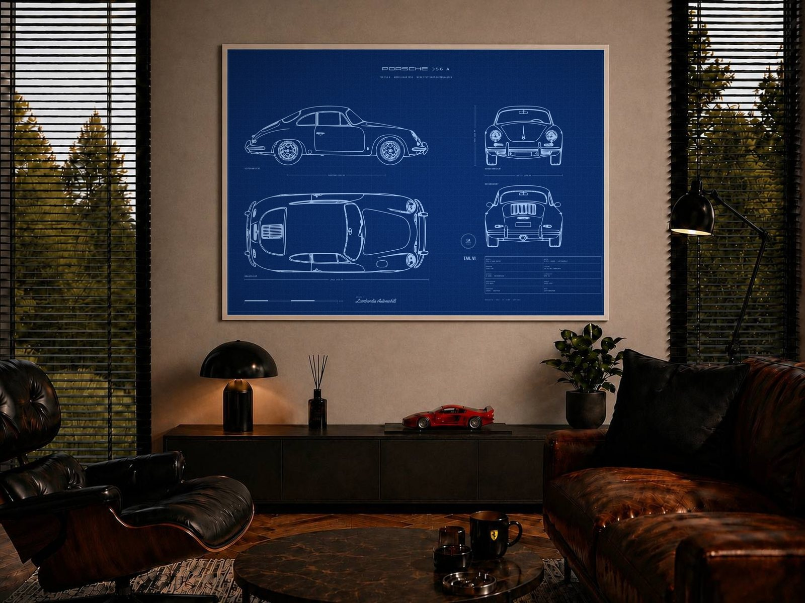
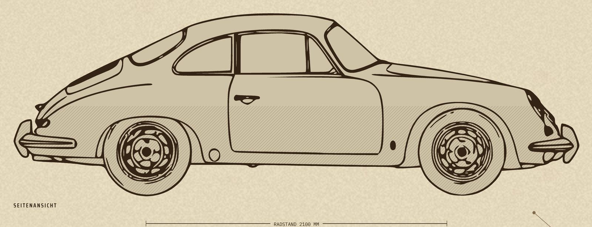
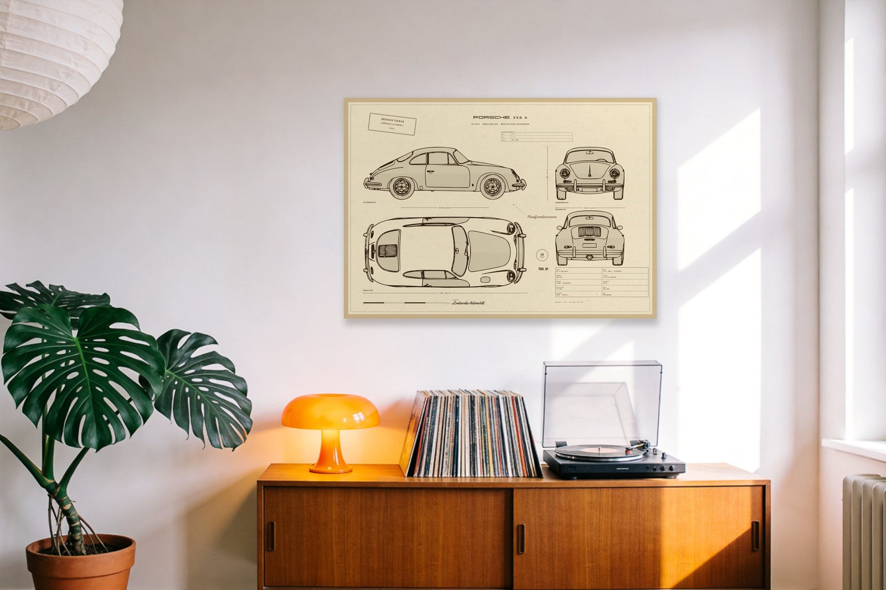
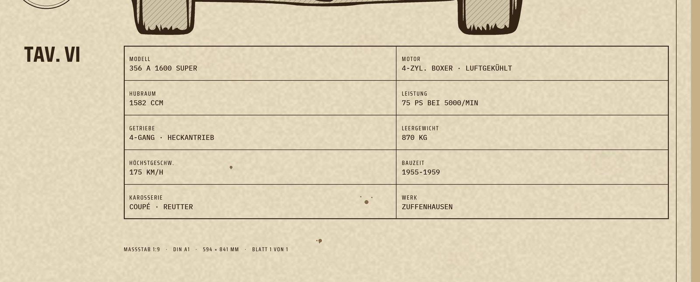
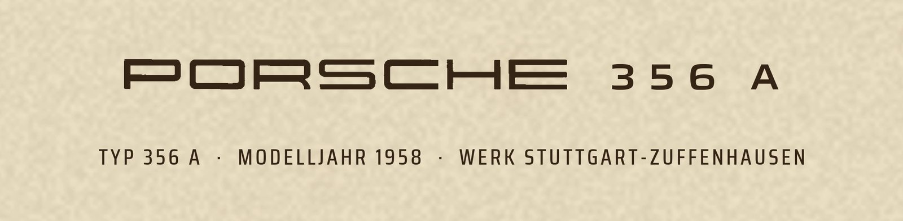

Porsche 356 A
Not selected
{kind=link}

{kind=link}

{kind=link}

{kind=link}

{kind=link}

{kind=link}
{kind=link}
The sheet at full print dimensions, 9933 × 7016 — A1 at 300 dpi, 8.3 MB. Byte for byte the file that goes to the printer; nothing here is re-encoded or resized.
Direct link, for the Prodigi order that order.mjs places: /print/Porsche-356-A-A1-print.jpg
Porsche 356 A Technical Engineering Poster
The car Porsche built before it had a 911 to hide behind. Everything the marque still means starts here.
This is an A1 engineering sheet of the Porsche 356 A 1600 Super, drawn in the language of factory documentation: four orthographic views, side, front, rear and plan, set on a drafting grid, with the overall dimensions called out as real dimension lines and a title block carrying the mechanical specification.
The Archivio Technico series
This sheet is TAV. VI in an ongoing archive of technical drawings, each built to the same grid, the same title-block system and the same standard of sourcing.
Condition
New. Printed on Enhanced Matte Art Paper, 200 gsm, archival pigment inks, unframed.
Dimensions
- 594 x 841 mm (A1)
- Landscape orientation
- Drawn to 1:10, with a graphic scale bar on the sheet
- Unframed, unmounted
Perfect for
- Air-cooled Porsche owners and 356 registry members
- Collectors of factory technical documentation
- Motorsport and engineering enthusiasts
- Workshop, garage, office and showroom interiors
- Anyone restoring or chasing a 356
Technical specification
- Modell: 356 A 1600 SUPER
- Motor: 4-ZYL. BOXER · LUFTGEKÜHLT
- Hubraum: 1582 CCM
- Leistung: 75 PS BEI 5000/MIN
- Getriebe: 4-GANG · HECKANTRIEB
- Leergewicht: 870 KG
- Höchstgeschw.: 175 KM/H
- Bauzeit: 1955-1959
- Karosserie: COUPÉ · REUTTER
- Werk: ZUFFENHAUSEN
- Länge: 3950 mm
- Breite: 1670 mm
- Höhe: 1310 mm
- Radstand: 2100 mm
Shipped with care using rigid packaging.
| Era | 1900-2000 |
|---|---|
| Manufacturer/Brand | Other -> Porsche |
| Poster title | 356 A |
| Estimated period | 1950s |
| Condition | A (excellent - mint condition) |
| Number of objects | 1 |
| Height | 594 |
| Width | 841 |
| Unit | mm |
| Autographed by a famous person | No |
| Designer/Artist | Other -> Lombardia Automobili |
| Subject | Transport, Graphic design, Illustrated, Vintage, Applied art, Technology, Other |
| Subject keywords (Other) | automobili, blueprint, technical drawing, engineering drawing, A1 poster, porsche, 356, 356a, air-cooled, luftgekuehlt, pre-911, reutter |
| Country of origin | Germany |
| Specific region of origin | Stuttgart |
| Your reference label | blue + p356 |
- Description: paste the DESCRIPTION block above VERBATIM, markdown markers stripped. Add nothing - no SHIPPING section, no upper-cased heads (founder, 2026-09-01).
- Images: 6, in order - **(04) noir room as the COVER**, (01) hero, (06) car profile close-up, (02) the room, (03) specs close-up, (05) logo close-up. Founder's order, 2026-09-01.
- Estimated value: EUR 200 (expert-only, buyers never see it)
- Set a reserve price: OFF
- Offer buy now: OFF
- Shipping preset: `global`
- Update preset if changes are made: ON (editing any rate here rewrites the preset for every future lot)
- Package size: Medium (an A1 tube is ~65 x 10 x 10 cm, ~0.4 kg; Small maxes at 38x26x3 cm and fails on both length and depth. Founder, 2026-09-01.)
- Pickup only: OFF
- Offer free shipping: OFF
- Offer free pickup: OFF
- Offer combined shipping: ON
- Shipping rates: EUR 25 to every listed country, EUR 30 rest of world
- Finish at **Save as draft**. Submit is the founder's, per lot.